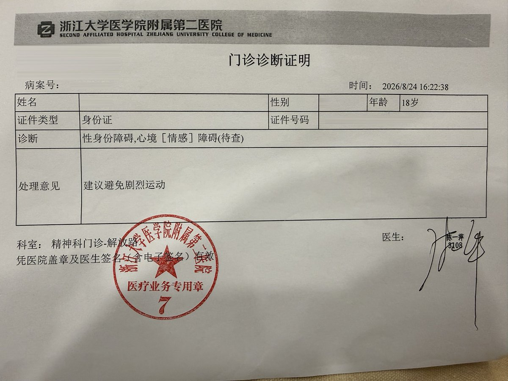

Pavlova☘️
@pavlova233
@Kuriyona xm 不用军训

Kuriyona 🏳️⚧️
@Kuriyona
所以说关于大证......🤔
本来只是想去开到证明来免训军训什么的，然后就是医生又怀疑我双相了什么什么的，开完药最后给的诊断证明把之前的性身份障碍也写上去了🤔
虽然不太喜欢性身份障碍的描述但是属于是可以免了军训又意外开到了大证好诶😋 https://t.co/agyXu5Wa47 https://t.co/tXGQ7ym7x0